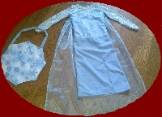

Featured Products

Green Apron
Size-Large
Perfect for your little baker!

Elsa Costume
Size-Medium
Inspired by the disney movie Frozen!


Tips and Tricks
- Don't be a slave to the seam allowance Most commercial sewing patterns use a 5/8" seam allowance. But using a 3/8" or even 1/4" seam allowance, especially on curved seams, reduces bulk and can make setting in sleeves much easier. Just make sure to keep a steady hand so your fabric doesn't slip out.
- Use pins sparingly When I was learning how to sew, I was encouraged to go to town on the pinning. But pins can cause the fabric to lay differently, which can lead to puckering. When you’re at the machine, use your left hand to hold the fabric down, while holding both pieces of fabric in your right hand, providing a little bit of tension.
- You don't NEED a serger While a serger makes the job easier, not everyone has the money to spend on a good one. Luckily it’s possible to successfully sew knits or bind edges on a sewing machine. Just make sure you are using a ball point needle for knits and use a zigzag stitch that will stretch with and secure the fabric.
- Add a lint roller and magnet to your sewing box A lint roller makes it incredibly easy to clean up all of those clipped threads. The magnet is helpful for attracting straight pins if you (or your child, in my case) dumps them everywhere.
- True up your fabric Fabric cut off the bolt rarely has a completely straight edge. This can be really frustrating when you’re trying to line everything up perfectly, or if you have a very specific pattern. Fortunately, fabric rips straight. Just make a slight cut on the gross grain and rip away. This is also a handy trick when working with a large amount of yardage that the largest cutting table in the world wouldn’t be able to accommodate.
- Utilize your iron Seriously your iron is your best friend. Ironing before you cut, before you sew and every time you have a fresh edge may seem excessive but when you have crisp even lines you will thank me.